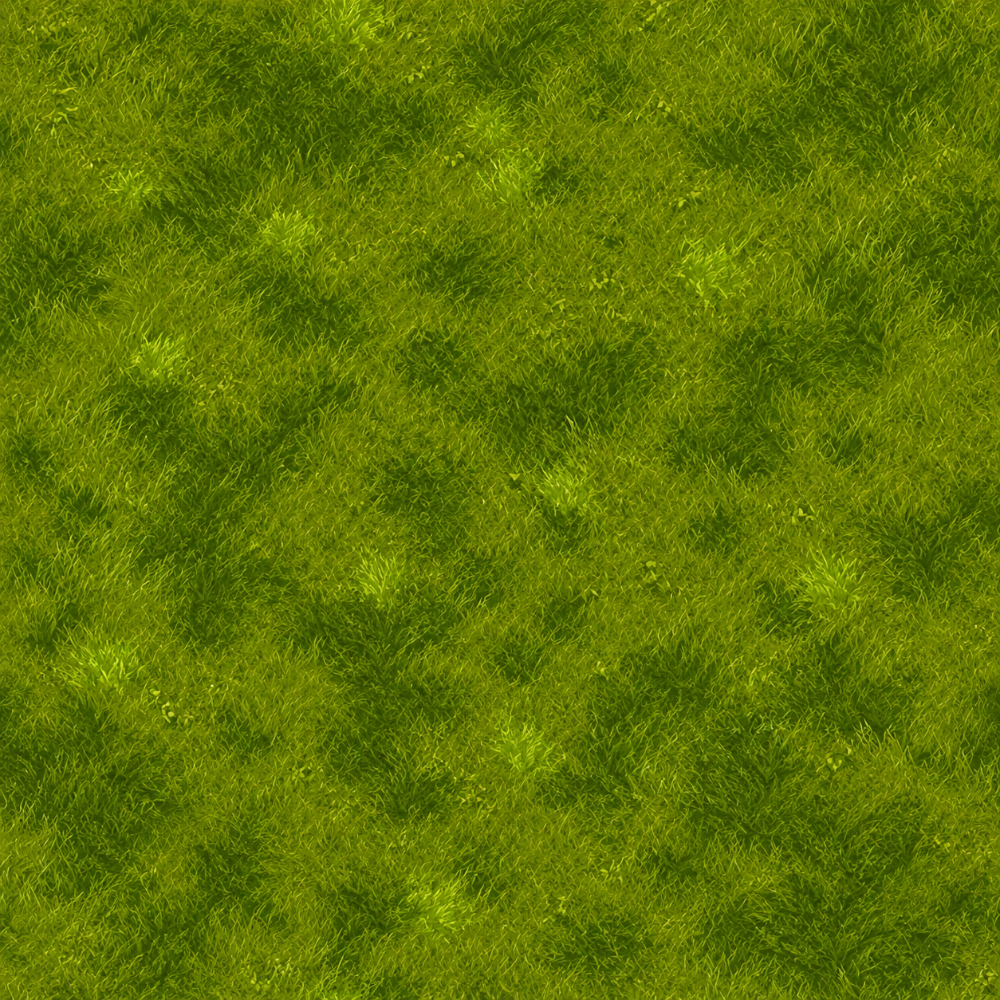
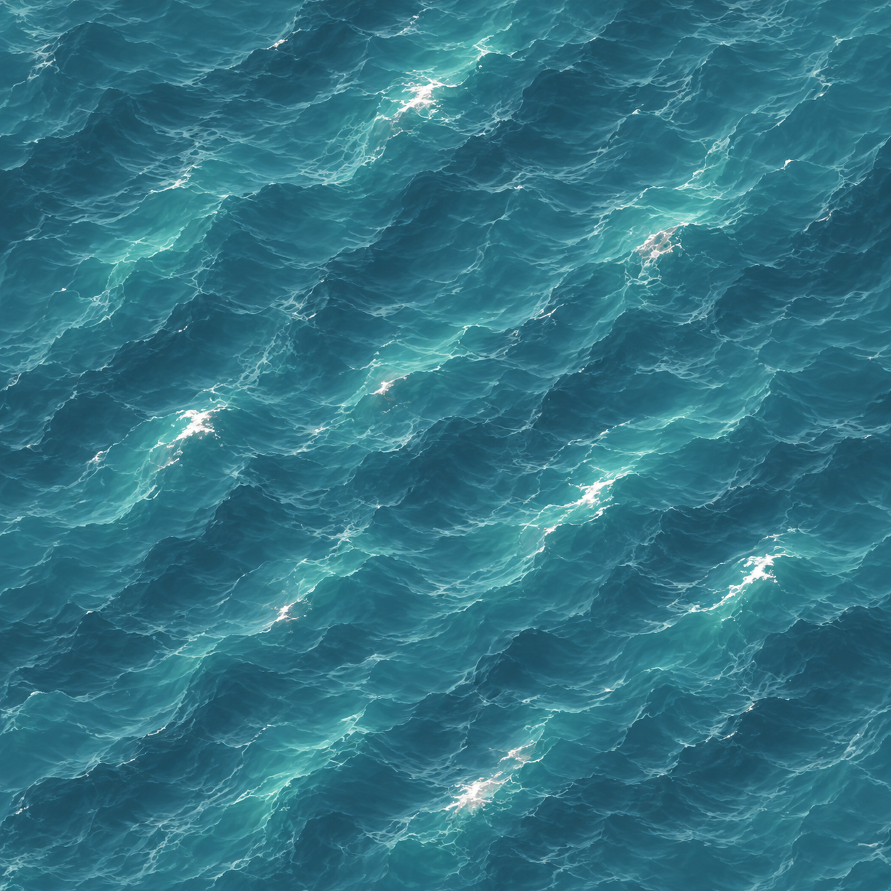

Original Amiga terrain beside newly illustrated studies. All artwork is unapproved. Review notes and reproduction commands record remaining changes.
Revision 02 reconstructs continuous natural surfaces. Revision 01 below was rejected for preserving square source pixels. The new comparisons use a fixed bilinear reduction; approximately 90% original appearance at native size and smooth high-resolution artwork are both required. Current studies remain unapproved. The full masters below are displayed with smooth browser scaling; native comparison pixels stay sharp for inspection.


Recipes, fixed resampling and remaining fidelity work · Previous neighborhood baseline (contains rejected revision 01; revision 02 is not yet integrated).
Some local images are missing. Reproduce the private original references and comparison outputs using the linked notes; keep them in ignored build/.